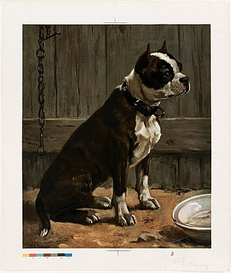
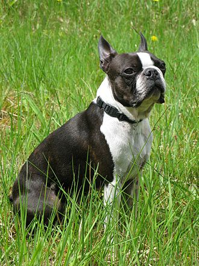
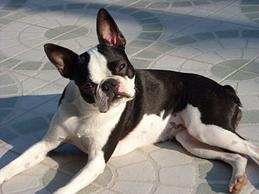
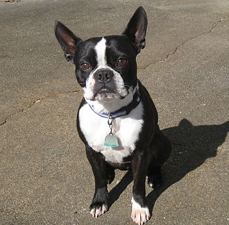

Boston Terrier
Copied verbatim from Wikipedia, the free encyclopedia
The Boston Terrier is a breed of dog originating in the United States of America. This “American Gentleman” was accepted in 1893 by the American Kennel Club as a non-sporting breed.1 Color and markings are important when distinguishing this breed from the AKC standard. They should be either black, brindle or seal with white markings.2 Boston Terriers are small and compact with a short tail and erect ears. The AKC says they are highly intelligent and very easily trained.3 They are friendly and can be stubborn at times. The average life span of a Boston Terrier is around 11 to 13 years.4 The American Kennel Club ranked the Boston Terrier as the 21st most popular breed in 2019.5
History

The Boston terrier breed originated around 1875, when Robert C. Hooper of Boston purchased from Edward Burnett a dog named Judge (known later as Hooper’s Judge), which was of a bull and terrier type lineage. Hooper’s Judge is directly related to the original bull and terrier breeds of the 19th and early 20th centuries. The American Kennel Club cites Hooper’s Judge as the ancestor of all true modern Boston Terriers. Judge weighed about 32 pounds (15 kg).
Judge was bred to Burnett’s Gyp (or Kate). Gyp was a white bulldog-type female, owned by Edward Burnett, of Southboro, Massachusetts. She weighed about 20 pounds (9.1 kg), was stocky and strong and had the typical blocky head now shown in Bostons. From this foundation of the breed, subsequent breeders refined the breed into its modern day presentation. Bred down in size from fighting dogs of the bull and terrier types, the Boston Terrier originally weighed up to 44 pounds (20 kg) (Old Boston Bulldogs).

The breed was first shown in Boston in 1870. By 1889 the breed had become sufficiently popular in Boston that fanciers formed the American Bull Terrier Club, the breed’s nickname, “roundheads”. Shortly after, at the suggestion of James Watson (a noted writer and authority), the club changed its name to the Boston Terrier Club and in 1893 it was admitted to membership in the American Kennel Club, thus making it the first US breed to be recognized. It is one of a small number of breeds to have originated in the United States. The Boston Terrier was the first non-sporting dog breed in the US.
In the early years, the color and markings were not very important to the breed’s standard. By the 20th century the breed’s distinctive markings and color were written into the standard, becoming an essential feature. The Boston Terrier has lost most of its aggressive nature, preferring the company of humans, although some males will still challenge other dogs if they feel their territory is being invaded. Boston University has used Rhett the Boston Terrier as their mascot since 1922. Wofford College in Spartanburg, SC has had a live Boston Terrier mascot named Blitz since 2003 that attends home football games. The Boston Terrier has also been the official state dog of Massachusetts since 1979.
Description
The Boston Terrier is a compactly built, well-proportioned dog. It has a square-looking head with erect ears and a slightly arched neck. The muzzle is short and generally wrinkle-free, with an even or a slightly undershot bite. The chest is broad and the tail is short. According to international breed standards, the dog should weigh no more than 25 pounds (11 kg). Boston Terriers usually stand up to 15–17 inches (380–430 mm) at the withers.
The American Kennel Club divides the breed into three classes: under 15 pounds, 15 pounds and under 20 pounds, 20 pounds and not exceeding 25 pounds.
Coat and color
The Boston Terrier is characteristically marked with white in proportion to either black, brindle, seal (color of a wet seal, a very dark brown that looks black except in the bright sun), or a combination of the three. Any other color is not accepted as a Boston Terrier by the American Kennel Club, as they are usually obtained by crossbreeding with other breeds and the dog loses its characteristic “tuxedo” appearance.6 Any Boston Terrier from AKC parentage regardless of the color, or if it is a splash or has a blue eye or weak ears, can be and are registered by the AKC and participate in any AKC sporting events.

According to the American Kennel Club, the Boston Terrier’s markings are broken down into two categories: Required, which consists of a white chest, white muzzle band, and a white band between the eyes; and Desired, which includes the Required markings plus a white collar, white on the forelegs, forelegs, up to the hocks on the rear legs. For conformation showing, symmetrical markings are preferred. Due to the Boston Terrier’s markings resembling formal wear, in addition to its refined and pleasant personality, the breed is commonly referred to as “the American Gentleman.”

Temperment
Boston Terrier is a gentle breed that typically has a strong, happy-go-lucky, and friendly personality with a merry sense of humor. Boston Terriers are generally eager to please their owner and can be easily trained. They can be very protective of their owners, which may result in aggressive and territorial behavior toward other pets and strangers. The breed requires only a minimal amount of grooming.
While originally bred for fighting as well as hunting rats in garment factories, they were later bred for companionship. They are not considered terriers by the American Kennel Club, however, but are part of the non-sporting group.
Both females and males are generally quiet and bark only when necessary, Their usually sensible attitude toward barking makes them excellent choices for apartment dwellers. They enjoy being around people, get along well with children, the elderly, other canines, and non-canine pets, if properly socialized.
Grooming
With a short, shiny, smooth coat, Boston Terriers require little grooming. Bostons produce light shedding, and weekly brushing of their fine coat is effective at removing loose hair. Brushing promotes the health of the coat because it distributes skin oils, and it also encourages new hair growth. Occasional bathing is suitable for the breed.7
The nails of Boston Terriers require regular trimming. Overgrown nails not only have the potential to inflict pain on the breed, but they can also make walking difficult or tear off after getting snagged on something.
Similarly to nail trimming, tooth brushing should also be done regularly to promote good oral health. The risk of the breed developing oral pain, gum infection, or bad breath can be decreased with regular tooth brushing that removes plaque buildup and other bacteria. In addition, poor dental hygiene can lead to tooth root abscesses that can lead to damage around the tissue and eventually lead to the loss of teeth.
Footnotes
Meade, Scottee (2000). The Boston Terrier: An Owner’s Guide to a Happy Healthy Pet. Howell Book House. ISBN 1-58245-159-1.↩︎
“Boston Terrier Dog Breed Information”. Akc.org. Retrieved 11 December 2017.↩︎
“The Boston Terrier Club Of America”. Bostonterrierclubofamerica.org.↩︎
“Most Popular Dog Breeds - Full Ranking List”. Akc.org. Retrieved 11 December 2017.↩︎
“Boston Terrier Dog Breed Information”. Akc.org. Retrieved 11 December 2017.↩︎
“Get to Know the Boston Terrier”, ‘The American Kennel Club’, retrieved 19 May 2014↩︎